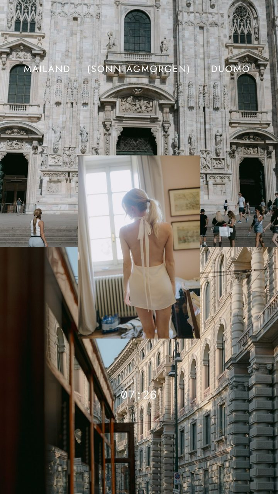
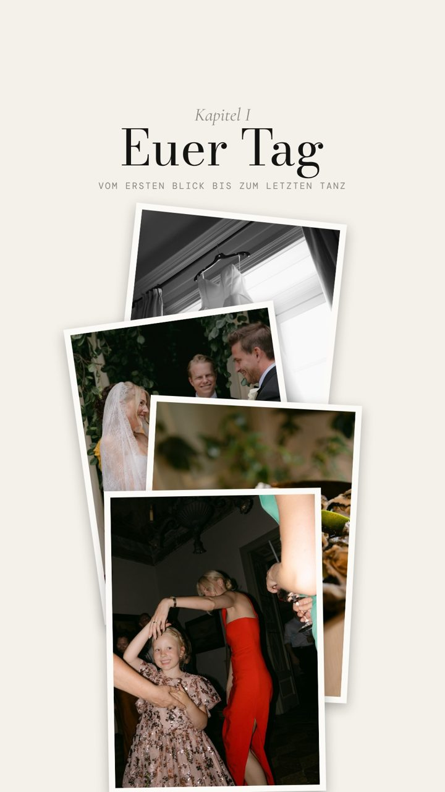

Feedwerk ist die Layout-App für Fotografen. Du legst deine Bilder einmal an und bekommst Story (9:16) und Beitrag (4:5) gleichzeitig: kuratiert, ruhig, in voller Auflösung.
Jede dieser Stories ist direkt in Feedwerk entstanden, mit Layouts, Looks und Text-Vorlagen.


Story und Beitrag entstehen gleichzeitig. Kein doppeltes Anlegen.
Originalgröße im Export, dein Name und dein © stehen in den Bilddaten.
Kein Konto, kein Tracking, keine Uploads. Deine Fotos verlassen dein Gerät nicht.
Michael Banert · Fotografie Banert
Hasenbergstraße 45
70176 Stuttgart
Deutschland
E-Mail: hallo@feedwerk.app
Die App Feedwerk verarbeitet deine Fotos und Videos ausschließlich auf deinem Gerät. Es gibt kein Konto, kein Tracking und keine Übertragung deiner Bilder an uns oder Dritte.
Verantwortlich: Michael Banert, Hasenbergstraße 45, 70176 Stuttgart, hallo@feedwerk.app.
Diese Website setzt keine Cookies und kein Analyse-Werkzeug ein. Gehostet wird sie bei GitHub Pages (GitHub Inc., USA). Beim Aufruf verarbeitet GitHub technisch notwendige Daten wie deine IP-Adresse, um die Seite auszuliefern. Schriften werden von dieser Seite selbst geladen, nicht von Google. Schreibst du uns eine E-Mail, nutzen wir deine Adresse nur, um zu antworten und dich zum Start zu informieren. Eine Nachricht genügt, und wir löschen sie.
Du hast das Recht auf Auskunft, Berichtigung, Löschung und Beschwerde bei einer Datenschutz-Aufsichtsbehörde.